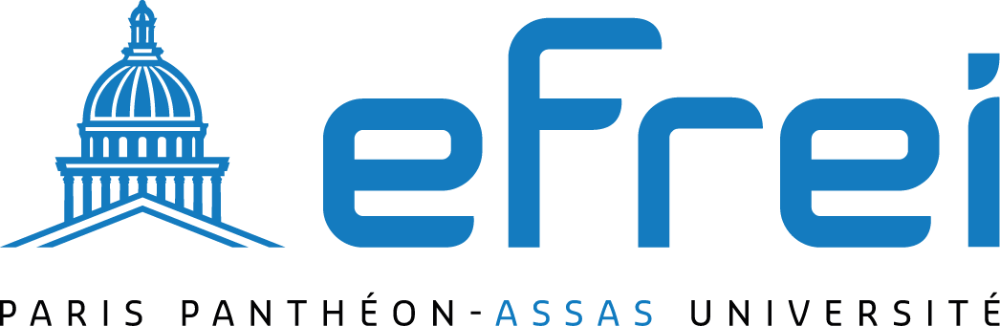

Qui sommes-nous ?
Nous sommes Julien CHAN PENG et Alex HAING, étudiants en deuxième année à l'EFREI Paris (Villejuif), une école d'ingénieurs en informatique. Nous avons créé ce site web dans le cadre d'un projet en programmation web dirigé par la professeur d'informatique Maha NACEUR. Notre site, Mario Pedia, est dédié à l'univers de Mario, un thème qui nous passionne depuis notre enfance.
Notre École
EFREI Paris est une école d'ingénieurs en informatique située à Villejuif, en région parisienne. Fondée en 1936, l'école forme des ingénieurs dans les domaines de l'informatique, des technologies numériques et de l'innovation. Pour en savoir plus sur EFREI Paris, vous pouvez visiter leur site web :
EFREI en quelques images
Où nous retrouvez ?